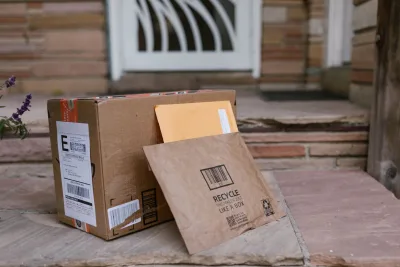

Threat Awareness
Understand the risk before it finds you
Every guide here exists to build awareness and confidence — not fear. Trend-level analysis, practical takeaways, and a clear next step.
Our editorial approach
How we cover current events
We report on patterns and trends drawn from public reporting — never on individual victims, never with speculation about ongoing cases, and never implying a tragedy could have been prevented "if only." The goal is for you to understand a real category of risk well enough to make a calm, informed decision about your own preparedness.

Residential — Trend
Daytime hours have overtaken night as the peak window for home burglaries
FBI Uniform Crime Reporting data for 2024 shows residential burglaries now occur more often during the day (216,601 incidents) than at night (174,053) — a reversal of the common assumption that break-ins mostly happen after dark. The pattern reflects burglars favoring hours when homes are predictably empty. Overall burglary rates are falling sharply — down 9.5% in 2024 and 69% since 2005 — so this is a shift in when homes are exposed, not a growing overall threat.

Commercial — Trend
91% of former employees retain some access to company systems after leaving
A survey of over 1,000 employers and recently departed employees found the large majority kept some form of access after departure — including email, software, and in some cases financial information — with nearly a third of employers not immediately revoking core workspace access.

Personal / Travel — Trend
Stalkerware apps keep getting hacked and leaked, exposing the people they were used to track
At least 27 stalkerware companies have been hacked or had data leaked since 2017, with 8 shutting down entirely — including one 2025 breach that exposed more than 500,000 records. The pattern is a reminder that the apps marketed to covertly track a partner or family member are themselves a security liability, not a safe way to monitor anyone.
Personal — Trend
Industry updates its national hand-protection standard after finding inconsistent safety labeling
The organization that sets U.S. glove-safety standards introduced a uniform rating label after finding wide inconsistency across manufacturers. The update cites OSHA-sourced estimates that about 71% of hand injuries are preventable with proper gloves — yet roughly 70% of injured workers weren't wearing any, and 30% of those who were had the wrong type.
Guides
Start with the basics
Personal
How to audit your own digital footprint
A step-by-step look at what's publicly discoverable about your location, schedule, and property — and how to reduce it.
Residential
A homeowner's walkthrough of common vulnerabilities
The access points, blind spots, and low-cost fixes that come up in most residential risk assessments.
Commercial
What a workplace security assessment actually checks
Access control, visitor management, and crisis planning — what "good" looks like.
Entertainment
What a venue advance survey covers before doors open
Entry points, choke points, medical routes, and the coordination plan — mapped before the event, not during it.